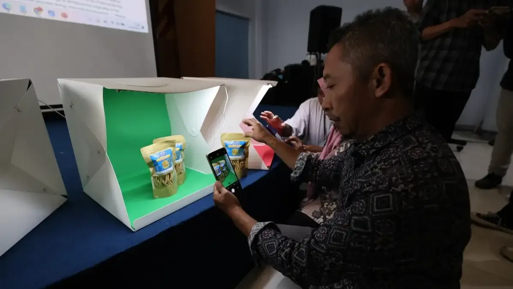

Desain Grafis
Mempelajari prinsip desain visual dan penggunaan tools modern untuk menciptakan aset konten yang estetik dan profesional.

Kuasai Software Desain & Ciptakan Karya Visual yang Memukau
Program Pelatihan Desain Grafis dari Radar Kediri Institute dirancang untuk mengubah peserta — dari yang belum mengenal desain menjadi desainer yang mampu menciptakan karya visual profesional. Dengan kurikulum berbasis industri dan instruktur praktisi berpengalaman.


Detail Program
- Kategori Desain Grafis & Visual
- Format Teori, Praktik & Project
- Durasi 5 Hari (40 Jam)
- Peserta Pemula hingga Menengah
- Instruktur Graphic Designer Profesional
- Sertifikat Ya, dari RK Institute
- Software Canva, Illustrator
Tentang Program Ini
Program Pelatihan Desain Grafis dari Radar Kediri Institute hadir untuk menjawab kebutuhan akan skill desain yang semakin penting di era digital. Dalam program ini, peserta akan mempelajari prinsip desain visual yang fundamental serta penguasaan tools modern yang digunakan oleh profesional industri kreatif.
Kurikulum dirancang secara komprehensif, dimulai dari dasar-dasar desain seperti teori warna, tipografi, dan komposisi visual, hingga teknik advanced dalam menggunakan software desain. Setiap sesi dikemas dengan pendekatan learning by doing, dimana peserta langsung praktik membuat karya nyata yang bisa dijadikan portofolio.
Materi yang Dipelajari
Prinsip Dasar Desain Grafis
Memahami elemen dan prinsip desain visual termasuk teori warna, tipografi, hierarchy, balance, contrast, dan komposisi untuk menciptakan desain yang estetis dan komunikatif.
Adobe Photoshop untuk Editing
Menguasai teknik editing foto, manipulasi gambar, retouching, color grading, dan compositing menggunakan Adobe Photoshop untuk kebutuhan sosial media, iklan, dan konten digital.
Adobe Illustrator & Desain Vektor
Membuat desain berbasis vektor seperti logo, icon, ilustrasi, dan branding identity menggunakan Adobe Illustrator dengan teknik pen tool, shape builder, dan pathfinder.
Desain Layout & Typography
Belajar menyusun layout untuk poster, banner, brosur, dan media cetak lainnya. Termasuk pemilihan font, kerning, leading, dan hierarki teks yang efektif.
Project Final & Portofolio
Mengerjakan project desain nyata dari brief klien simulasi. Hasil karya akan dikurasi menjadi portofolio profesional yang siap digunakan untuk melamar kerja atau freelance.
Dokumentasi Kegiatan
Rekam jejak program Pelatihan Desain Grafis bersama berbagai peserta dari sekolah, universitas, dan umum di Kediri Raya